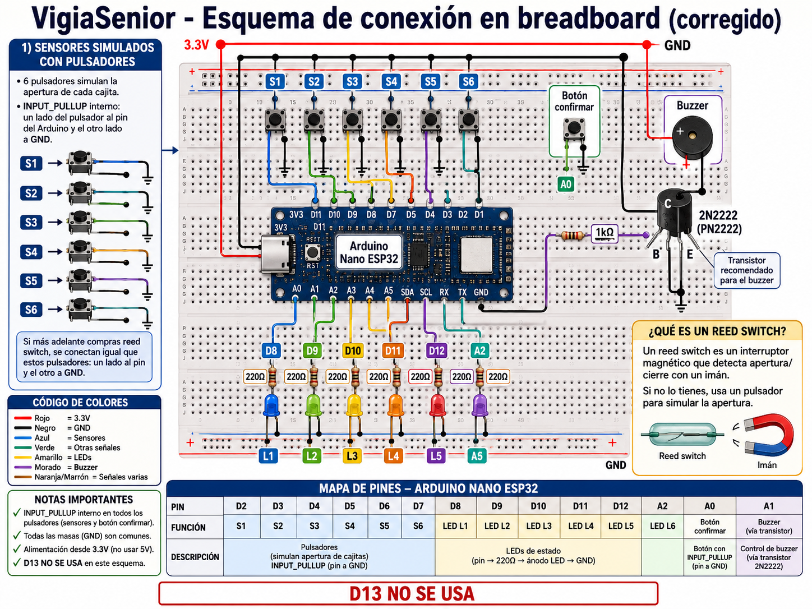
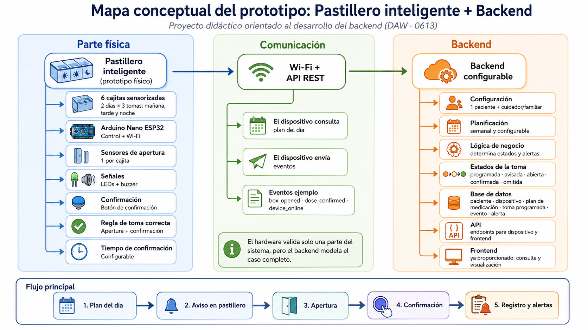
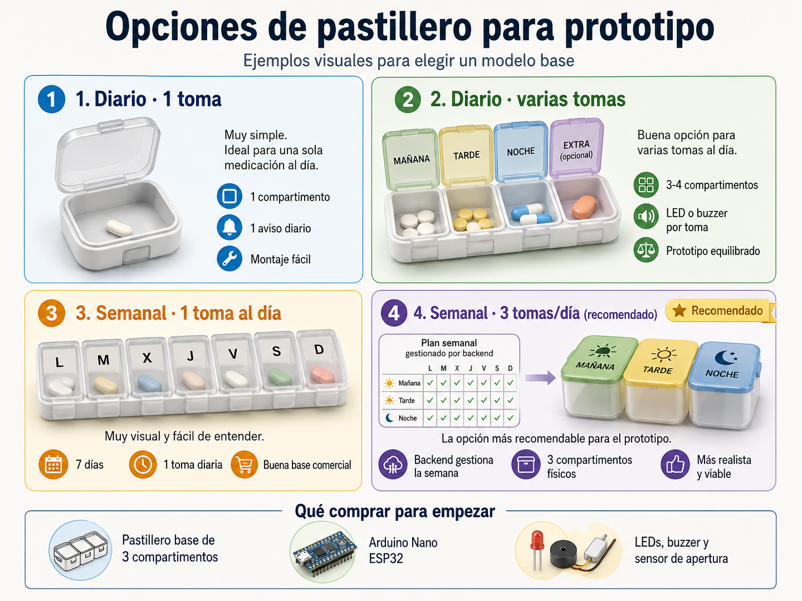

Notas de conexión
Resumen de pines, sensores, LEDs, confirmación y buzzer.
AbrirMontaje físico, esquemas de apoyo y sketches Arduino.
La parte física sirve para generar eventos y entender el flujo del pastillero. No se evalúa como proyecto de electrónica avanzado.
Resumen de pines, sensores, LEDs, confirmación y buzzer.
AbrirVersión preparada para enviar eventos a la API.
Abrir .inoVersión útil para probar el flujo sin WiFi ni servidor.
Abrir .ino

